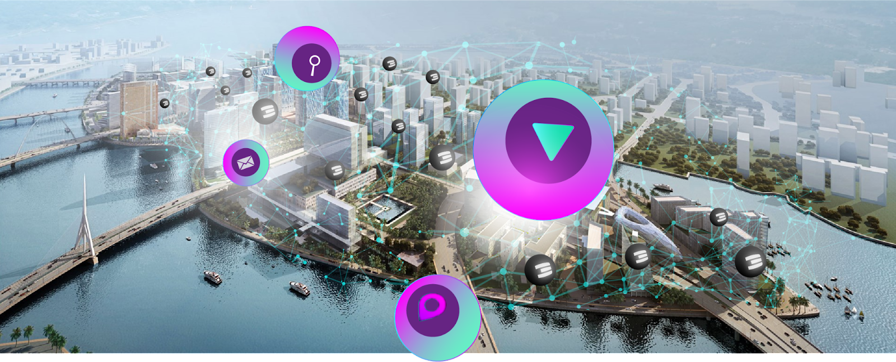

Necessary Requirements
Product Management for INCA: Neighborhood Clouds

The TFTech team is confident it can realize 3-10 additional INCA projects over the next year, but we need some more funding to staff our team and do more product management. Each INCA project is more than 5m USD revenue for TFTech with a decent margin, and time to pay back by means of TFT.
TFT Liquidity is a matter of time.

See here for document about TFT Liquidity Approach (http://liquidity.threefold.me).
Grid Expansion & Decentralization Activities
Expanding our grid is a high priority, much more than utilization. Without enough capacity out there we can never be taken seriously, it's like launching a satellite network around the world with 10% coverage, it wouldn’t work. Grid expansion requires lots of TFT to be staked which drives liquidity (TFT can only be bought right now from the liquidity pool).
Provide a decentralized way for everyone to buy 3Nodes in a fully decentralized way (phase 2, end 2022).
We are working on tooling in our TFChain which allows every community member to assemble a 3node and register this 3node in the chain for sale. Any community member can now see the capacity of the available 3node and the TFT future farming reward. Whoever is interested to acquire this 3node can pay for the 3node with TFT. This payment will go in an escrow account. Once the node is activated by the farmer who received the node from the seller, the TFT will go from the escrow account to the seller.
Basically this a full blockchain based way for assembly, delivery and registration of 3nodes in the ThreeFold grid.
The benefits are good
- Anyone can now make money in assembling, selling and supporting 3nodes to the community
- Anyone can now have support in bringing a 3node live.
- The grid can grow faster this way.
- Our Token TFT gets another use case driving liquidity.
There is also a marketplace hosted centrally but all payments & deliveries are decentralized
- see https://marketplace.3node.global
- TFT will also be promoted as the preferred payment system
We need to make it easier for people to buy/sell tokens
We are making very good changes in how people can use build in features of Stellar & Algorand to buy/sell TFT.See above we are working on a Peer2Peer wallet & DAO based liquidity pool to allow anyone to trade TFT in a safe way.
Boosters for farmers, a gamified experience (end 2022).
It's important we establish a link between utilization and farming reward, for that we will implement a mechanism of boosters which means that if certain milestones are achieved e.g. utilization milestones, uptime milestones, decentralization milestones the farmer receives booster tokens, which are extra rewards in TFT.
This needs to be specified and eventually implemented in our TFChain.
We need more tools around Decentralization (summer)
We are working on our DAO layer (Decentralized Autonomous Organization), today we try to act as a DAO using our forum and voting. We still need to improve in how to do this consistently. It's not our first priority.
More scalability around deploying nodes
Our Internet of Internet and INCA neighborhood cloud Concept will drive faster expansion of the grid, see below for more details.
We need some extra tooling to make it easier for everyone
- More consistent and nicer administration UI, we need to aggregate the different interfaces we have.
- Better documentation, we are still behind
- Tools for Liquidity Pool (allow people to see how the pool is doing = reporting)
Community building Activities

- Our community building is organic and very peer2peer
- We organize focussed events & biz dev activities.
- We work with a largely outside biz dev team to get leads, this works very well and doesn’t require more cash.
- We are constantly getting feedback and it's our obligation to make sure that their concerns are addressed. Community can be the ThreeFold community, farmers and of course our TFTech investors.
- The forum is getting very active and it shows the interest of the community to participate.
- Read this doc for how we want to communicate with our community.
Later this year or early next year, we want to organize a ThreeFold Caravan of Light. A series of “plant the flag” events, starting in the US and Latin America where a group of people as a caravan of light go to places to plant a flag for a new internet.
This will happen by means of knowledge sharing motivational events combined with music and dance. For this we have support from an amazing team which is called Caravan of Light. It's a beautiful group of talented event organizers and network of artists.
We have now done a couple of events and it's incredible and very effective. We will also continue our events on the Nile, 2 maximum 3 times per year we come together on the Nile expanding our community.
So far each event has been amazing accelerators for our growth, we just need to do it more and more organized, this in our opinion is the best spend marketing budget, it's much more concrete and allows a solid community to be born.
Community is what we are, this is the most solid foundation for our project to grow on.
These events do cost money, but we believe they are the absolute most effective way to build community.
Next events
- Zanzibar TBD in collaboration with government (end aug)
- Sept, event in Anafi greece (not 100% sure yet, need 200 tickets to be sold)
- Nile Oct 2022
- Bigger US roadshow (Q4)
Build an operational Team for TFTech
TFTech has an amazing team of executors and there is a lot of goodwill involved but some are getting a little tired.
We have a very good team and extremely strong fighters right now who make it all possible, but also their strength is not necessarily operational activities to build a well oiled machine. The organization can be strengthened with a strong management team and of course more funding. Please do note, we are NOT looking for corporate or old school managers, we are a new type of company that will require new skills. passion, heart energy, doing good for the world cannot be taken lightly. The world is changing, we need a new type of leaders/coordinators.
The funding will soon resolve itself, the INCA deals are very successful, with proper guidance and execution we should be able to book more than 1m USD per month by the end of this year, which is absolutely amazing. We have to bridge the gap though.
We need to strengthen our team
- Find a CEO
- Find a VP Sales
- Find a VP Engineering
- Find a VP Operations
- Find a VP Marketing & Communication
Our existing management team has many things to do, it's in the best interest of the project to make much more of his time available for architecture and evangelization, not only for TFTech but also for the bigger Threefold/OurWorld vision.
The goal is to bring TFTech to an exit scenario < 2 years and a large part of the shares will go to a not for profit organization to keep on funding the bigger picture.
Let's not forget what we have in front of us, the possibility to enable multiple countries and some other huge communities, which is many millions of people with a completely new platform who can deliver a whole new future with more prosperity for everyone involved. We are doing it (-: